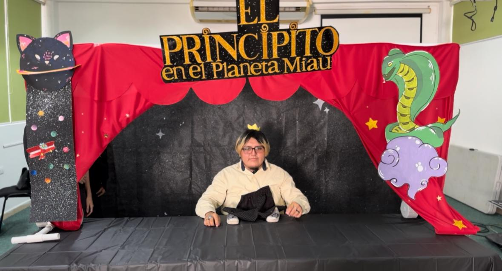

Técnica TeatralCuentos infantiles con la técnica de enanos falsos Técnica Escénica: Enanos FalsosLa técnica de enanos falsos crea la ilusión de personajes pequeños mediante disfraces especiales, posiciones del cuerpo y escenografía adaptada. Se ocultan las piernas del actor, y se colocan brazos falsos para lograr el efecto visual.  |